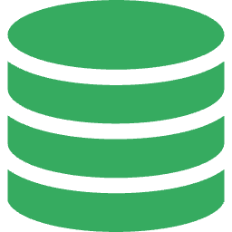

Checksums
Each release carries a checksums.txt next to the downloads:
sha256sum -c checksums.txt

db-manager devMySQL · MariaDB · PostgreSQL · SQLite · MongoDB · TiDB · Apache Doris
Browse and edit data, design tables, export a whole database, run a .sql file statement by statement, generate test data, compare two databases, turn a table into code — and keep a log of every statement the app runs. Connections, favourites and logs stay on this machine: no account, no telemetry, no cloud.
Download the latest release Source on GitHub See the screens
Six pages of the app, playing by themselves — hover to pause, or jump with the thumbnails below.
Every tool is built on the same driver contract, so it is offered when the engine can serve it — an entry point that would fail is not drawn at all.
Six engines behind one lazy tree: sessions, databases, schemas, then tables, views and indexes — every folder with its count, empty or not. Sort and group the list, tag a connection with a colour, mark it read-only.
Server-side paging, sorting and fourteen filter operators. Drag a column edge to resize it, click a row to slide its detail panel in, edit one cell or several fields at once — every write is parameter bound and shown before it runs.
The structure page is the editor: rename, retype, flag or drag-reorder the columns and the backend plans the DDL against the live catalogue. Preview and save go through the same planner, so what you read is what runs.
Structure, structure and data, or a single table's rows as CSV / JSON / JSONL / SQL. The backend reads the table and writes the file at the same time, so the progress bar, the byte count and Stop are all real.
Hand a .sql file to the backend: it reads it from disk, tells you what is inside — the statements that lose data, the ones a read-only connection will refuse, the USE that re-targets the rest — then runs it statement by statement with progress and Stop. No transaction wraps the file, and the window says so.
Fill a table from mock.js templates, one per column, with a placeholder picker that renders a sample value for every entry. A rejected row stops the run, or gets counted and skipped — your call.
Compare two databases of the same engine table by table and generate the script that turns the right one into the left one, ordered create, alter, drop. Only the right side may be read-only — the left is often production.
Turn a table's columns into a class, struct or record in one of eighteen languages, with nullability written the way each language writes it. Java comes with or without Lombok.
Ask the engine how it plans to run a statement without running it, and re-indent a script with the dialect's own grammar. Highlighting is done by the app, not by a lexer library, because quoting rules differ per engine.
One namespace on a canvas: tables of the same family in one row, ordered by foreign keys, with the referenced column pair on hover. Search, pan, zoom and export the drawing as a standalone SVG.
Every write statement the app ran, with its affected rows and the connection it ran on. The log lives in the data folder — one file per day, rotated, never trimmed — so it opens with no database connected.
The whole interface is translated, antd components included. Switch it from the settings page, the status bar at the bottom, or — on Windows — the tray menu, and nothing restarts.
The driver layer does not assume a relational model, so a document engine goes through the same contract — and an entry point the engine cannot serve is simply not drawn.
The home turf: TLS, charset and collation when creating a database, partitions, and InnoDB buffer pool plus process list on the overview page.
Several schemas in one database, serial and identity columns, and encoding plus locale when a database is created.
A single file: no server, no account. Attach extra databases, read the pragma values, and browse the file the way the server engines are browsed.
Collections, documents, indexes and a mongosh-style shell for queries. Document counts, sizes and dbStats on the overview page.
The MySQL wire protocol with TLS, plus a cluster member table from information_schema.CLUSTER_INFO.
Analytical, and read-only here on purpose: structure, indexes, the data grid, SQL and export all work; there is no table designer, and the app says why instead of failing.
On the roadmap Oracle and SQL Server: the dialect and the placeholder are already in the tree, the DSN and the catalogue queries are not — so they stay off the menu until they are.
Every release is built by CI on three runners and attached to the release:
db-manager.exe
Portable — no installer. WebView2 is required (Windows 10/11 already has it).
db-manager-macos-universal.zip
Unzip and drag db-manager.app into Applications. The build is not signed or notarised: right-click → Open the first time, or run xattr -cr.
db-manager
chmod +x db-manager && ./db-manager — needs GTK3 and WebKitGTK 4.0.
Each release carries a checksums.txt next to the downloads:
sha256sum -c checksums.txt
Go 1.24+, Node 20+, the Wails CLI 2.16 and just. `just release` compiles the current platform into release/ with a checksums file.
Each release body is rendered from the annotated tag and the Conventional Commit subjects since the previous one — the commit subjects are the release notes.
Connections, favourites, saved query files, the tree layout, the window state, the encryption key and the change log all live in one data folder — %APPDATA%/db-manager on Windows, the usual config folder on macOS and Linux.